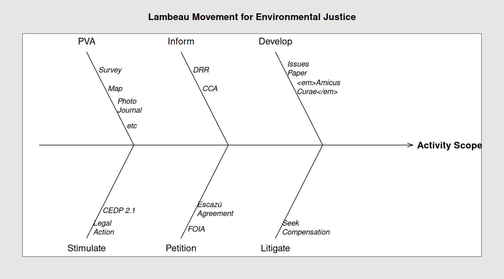

Objectives Activities and Output
If you’re here it means the devices required for the Lambeau PVA hold no mystery and we can move on. Click here to go back should clarity be needed at some point. Incidentally, those who have danced this dance before may recognise a familiar framework. Thing is … Can anyone put a name to it?
Objectives and Activities == Objectives
We want to keep our objectives S.M.A.R.T [Specific, Measurable, Achievable, Relevant and Time bound. I’ve heard four (4) objectives are the gold standard. What’s your take?
Before we deep dive allow me to dream some. Am hoping by the end of its timeline, LM4eJ will have enhanced competencies within Environment Tobago for it to conduct national and regional Climate Change vulnerability assessments in the context of the UN’s Adaptation Policy Framework. Enhancing the competencies of Environment Tobago is by design a function of the LM4eJ objectives.
Send email if this is you too.Objectives
In a nutshell:
To integrate Disaster Risk Reduction (DRR) and Climate Change Adaptation (CCA) into the future versions of the National Oilspill and Contingency Plan as pertains to Tobago. NOTE TO SELF (and possibly Toco)
To stimulate its creation and to inform the contents of a new Tobago focussed document akin to the abandoned Comprehensive Economic Development Plan (CEDP) that will integrate DRR and CCA measures.
To gauge impact of actions taken to enable Climate Change Adaptation policies, improve Disaster Risk Reduction planning which, if not attended to, compromises Tobago’s overall resilience.
Assist in the identification and nurturing of initiatives (not necessarily innovative) that facilitates Adaptation.
To lend support (including advocacy and consultation) to THA strategies for DRR, Adaptation and within those:
Advance the Environmental Justice framework by lobbying for the Government of the Republic of Trinidad and Tobago to sign the Escazú Agreement.
Outputs
Carry out a Participatory Vulnerability Assessment (PVA) of the Lambeau community of a standard that can be used further as a model for further assessments across Tobago.
Compile, integrate and share PVA disciplines with interested stakeholders - if possible students; of Geographic Information Systems (GIS) as done during the Lambeau PVA. Do the same while designing and using opinion surveys. This will be done via a mixture of virtual and face time sessions for the wider Tobago community. Same for editing photographs and video.
Use the Value Chain Analysis (from the PVA process) to improve the community’s understanding of climate change issues affecting Lambeau village health, well-being, income sources. and its wetland ecosystem.
Do the same as above for the Livelihood Analysis
Activities
| Item | Description |
|---|---|
| Survey the local community | Focus on Socio-Eco-Economic conditions. Target elderly, youth, women, fisherfolk, business people |
| Map the community | Layers to include: Geographic features. Time sensitive data regarding land use - drawn from key individuals (reinforced by Google timeshots). Lifestyle; including mean age, culture, income streams. Government spend. Economic contribution to GDP. |
| Inform the community | Of process, method, probable outcome, ongoing developments. |
| Develop the Lambeau 2024 Issues Paper | Use VA findings to substantiate an argument for State intervention beyond normal; such as health monitoring stations, accelerated restoration of the beaches other coastal zones and Lambeau hinterland, to improve the locale’s prospects from a biodiversity and economic standpoint. |
| Launch a petition via Lambeau Movement for Environmental Justice | Seeking financial support for village persons or businesses severely impacted by the February 2024 oilspill. |
| Litigate for environmental justice | Where Government is Defendant and Lambeau Movement for Environmental Justice as Plaintiff seeks financial help and other support for the persons and businesses negatively impacted by the Feb 7th spill. |